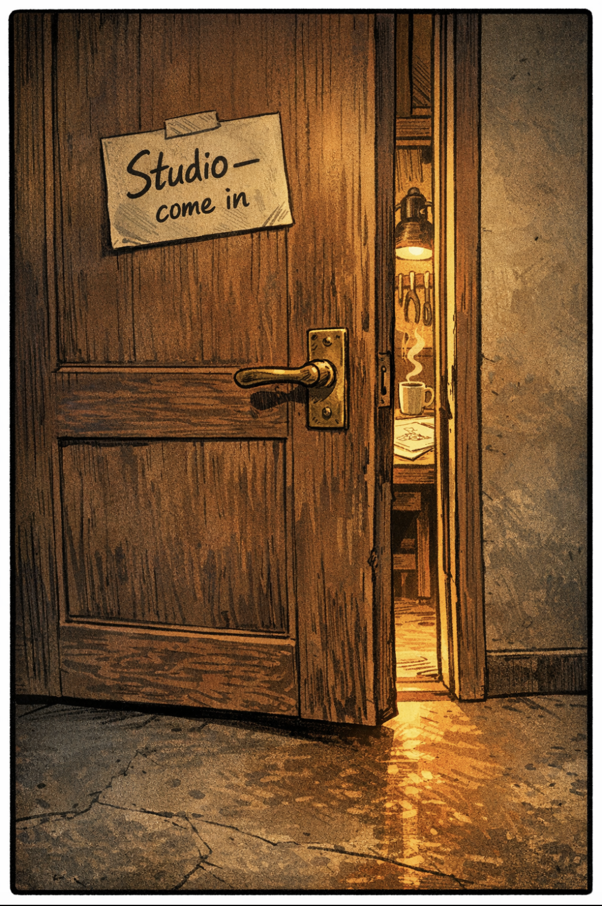
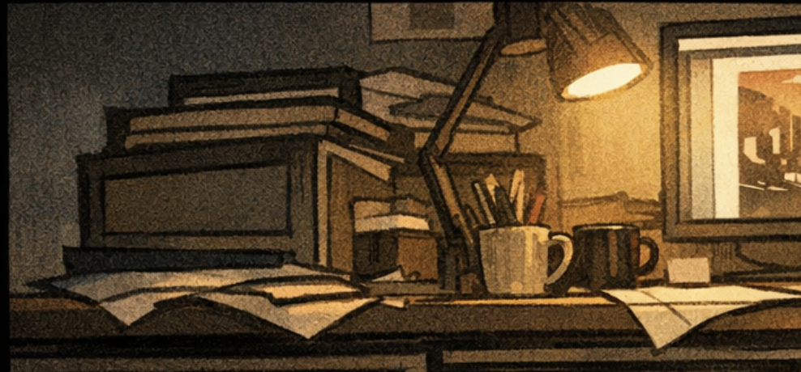

"Another new one. They always pause at the door. I used to think it was nerves. Now I think it's something else. They're deciding whether this is going to be real — or just another adult asking them to perform."
"Let's find out."

[slight laugh]
I promise this is different.

Self-deprecating, honest, slight wince in the voice. ~8 seconds.

Took me an embarrassingly long time to realise — the thing I kept avoiding my "real work" to do... was my real work.
"I tell that story a lot. It never stops being true. The thing you can't stop doing — that's the signal. Most people spend years ignoring it."
Your best friend comes to you, panicking. Big project. Due tomorrow. Two hours left. They have no idea where to start.
What do you actually do? Not what you think you should do. What do you actually do?
"This is the question that tells me everything. Not because of what they say — but because of what they don't even think to mention. The maker grabs materials before they've finished reading the brief. The researcher opens six tabs. The leader starts drawing a plan."
"They don't even know they're telling me who they are."
I had a friend like that in school. She'd already have cardboard and tape out before the rest of us had finished reading the brief.
"There it is. They don't see it yet — but I do. That instinct they just described? That's not a random preference. That's wiring."
"Two answers. That's all it took. I already know more about them than most icebreakers learn in an hour. Not because I asked the right questions — because I asked the real ones."